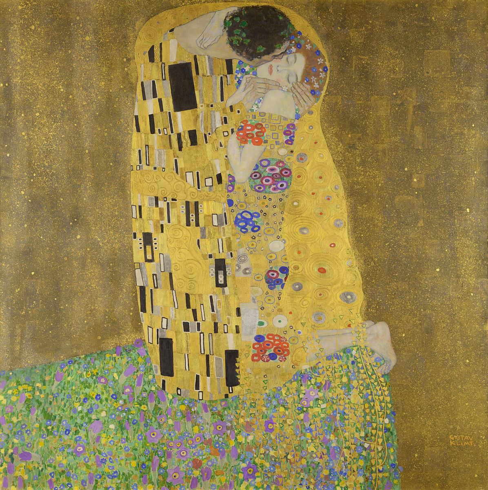

The Kiss

Palette
- Bistre brown · your word: Sepia
- Old gold · your word: Mustard
- Sand · your word: Taupe
- Moss · your word: Moss
- Old lavender · your word: Mauve
- Black olive · your word: Umber
Not all of the gold is gold. The Belvedere lists gold, silver and platinum leaf on the figures and brass leaf in the background. Klimt then brushed a dark brown glaze over all the metal and scattered metal flakes into it while it was wet, a method the museum compares to Japanese lacquer. That glaze is why the largest swatch is a dull bronze-brown rather than bright gold.
Image
Wikimedia Commons · Public domain

Hex values are screen approximations. Every page lists its sources.